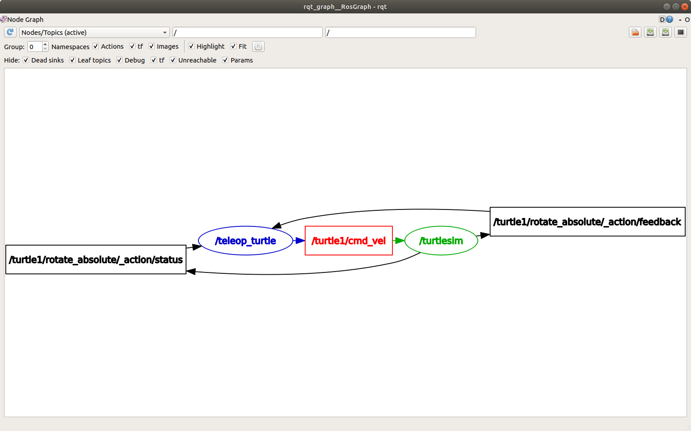
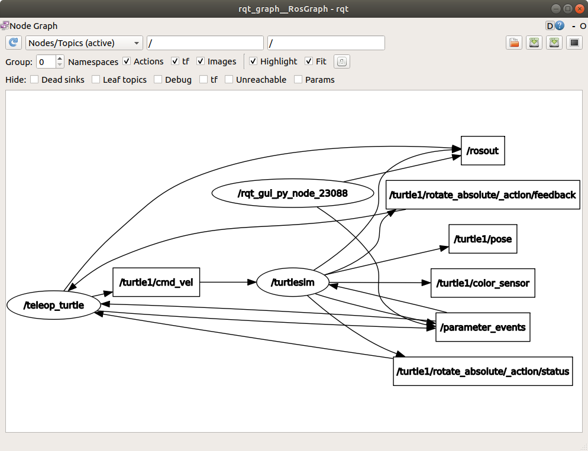
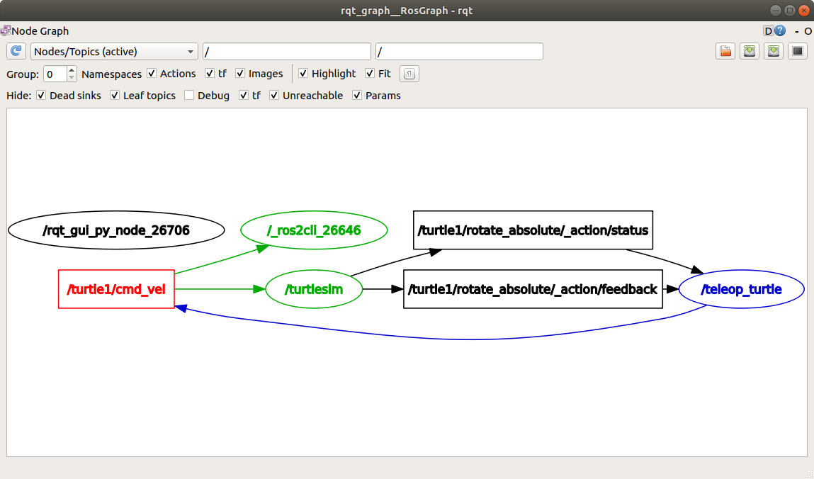
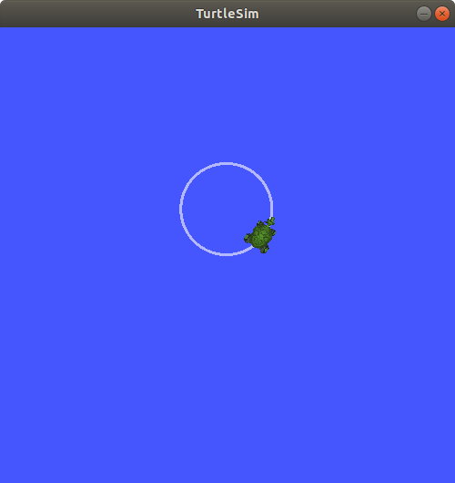
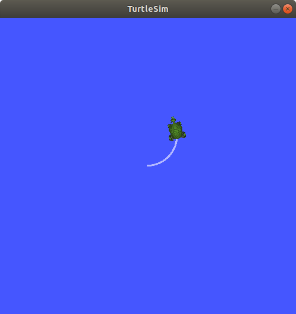
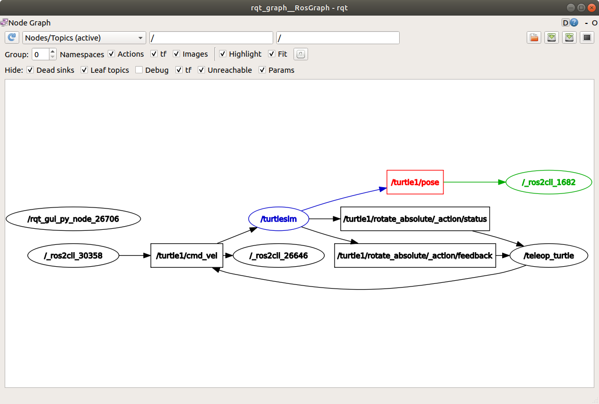

備註
您正在閱讀開發版本的文件。對於最新發行的版本，請參見 Lyrical。
Learning about topics - tutorial
Topics are one of the main ways nodes exchange data in a ROS system.
In this article, you will use rqt_graph and command-line tools to inspect topic connections, message types, published data, rates, and bandwidth.
After you follow these steps, you will be able to understand and test how data moves between nodes.
Goal: Use rqt_graph and command line tools to introspect ROS 2 topics.
Topics are one of the main communication types used for moving data around a ROS system.
This article walks you through using rqt_graph and other command-line tools to examine how nodes connect over topics.
A hands-on exercise with Turtlesim helps you understand how data moves around the ROS graph.
摘要
Nodes publish information to topics, which allows any number of other nodes to subscribe to and access that information.
You can use rqt_graph and command-line tools to introspect and examine the connections between nodes that share topics.
先備條件
Make sure you understand:
The function of nodes and how to work with them
The different interface types, including topics
Steps
備註
Remember to source ROS in every new terminal you open. See Configuring environment.
1 Run turtlesim nodes
Open a new terminal and run:
$ ros2 run turtlesim turtlesim_node
Open another terminal and run:
$ ros2 run turtlesim turtle_teleop_key
Names of these nodes are /turtlesim and /teleop_turtle by default.
2 Visualize the nodes with rqt_graph
Throughout this tutorial, you use rqt_graph to visualize the changing nodes and topics, as well as the connections between them.
rqt_graph is a graphical introspection tool whose highlighting feature is helpful when you examine more complex systems with multiple nodes and topics connected in many different ways.
Using turtlesim, ros2, and rqt tells you how to install rqt and all its plugins, including rqt_graph.
To run rqt_graph, open a new terminal and enter the command:
$ ros2 run rqt_graph rqt_graph
You can also open rqt_graph by opening rqt and selecting Plugins > Introspection > Node Graph.
You should see a graph similar to this:

備註
If your graph looks different, change the first drop-down to Nodes/Topics (active) and click the refresh button to its left.
In the graph, you should see the /turtlesim and /teleop_turtle nodes and the topic connecting them, as well as two actions around the periphery.
If you hover your mouse over the topic in the center, you should see the colour highlighting shown in the screenshot.
The graph illustrates how the /turtlesim node and the /teleop_turtle node communicate with each other over a topic.
The /teleop_turtle node publishes data (the keystrokes you enter to move the turtle around) to the /turtle1/cmd_vel topic, and the /turtlesim node is subscribed to that topic to receive the data.
3 List the active topics
In a new terminal, run the ros2 topic list command to list of all the topics currently active in the system:
$ ros2 topic list
The terminal returns:
/parameter_events
/rosout
/turtle1/cmd_vel
/turtle1/color_sensor
/turtle1/pose
Now run ros2 topic list -t to get the same list, but with the topic type appended in brackets:
$ ros2 topic list -t
The terminal returns:
/parameter_events [rcl_interfaces/msg/ParameterEvent]
/rosout [rcl_interfaces/msg/Log]
/turtle1/cmd_vel [geometry_msgs/msg/Twist]
/turtle1/color_sensor [turtlesim_msgs/msg/Color]
/turtle1/pose [turtlesim_msgs/msg/Pose]
These attributes, particularly the type, are how nodes confirm they are exchanging compatible data.
To show all of the topics in the rqt_graph, you can clear all of the Hide checkboxes.
For now, leave those options checked to avoid confusion.

4 View the data being published to a topic
To see the data being published on a topic, use:
$ ros2 topic echo <topic_name>
In a previous step, you learned that /teleop_turtle publishes data to /turtlesim over the /turtle1/cmd_vel topic.
Use echo to introspect that topic:
$ ros2 topic echo /turtle1/cmd_vel
At first, this command won't return any data.
That's because it's waiting for /teleop_turtle to publish something.
Return to the terminal where turtle_teleop_key is running and use the arrow keys to move the turtle around.
備註
The turtle_teleop_key terminal must be the active window to capture your key presses.
You should see position data being published for every movement that you make:
linear:
x: 2.0
y: 0.0
z: 0.0
angular:
x: 0.0
y: 0.0
z: 0.0
---
Now return to rqt_graph, uncheck the Debug box, and select the Refresh button.

The node created by the echo command should appear.
In this example it is /_ros2cli_26646, but the number on your machine will be different.
You can now see that the publisher is publishing data on the cmd_vel topic, and two subscribers are subscribed to it.
5 View the publisher and subscriber counts for a topic
Any number of nodes can publish on a topic, and any number of nodes can subscribe to that topic.
To see the publisher and subscriber counts for a topic, run:
$ ros2 topic info /turtle1/cmd_vel
The terminal returns:
Type: geometry_msgs/msg/Twist
Publisher count: 1
Subscription count: 2
5.1 View detailed topic information
To get more detailed information about a topic, use the --verbose (or -v) flag:
$ ros2 topic info /turtle1/cmd_vel --verbose
This will return additional details, including:
Node names and namespaces of publishers and subscribers
Topic type
QoS profiles
Type: geometry_msgs/msg/Twist
Publisher count: 1
Node name: teleop_turtle
Node namespace: /
Topic type: geometry_msgs/msg/Twist
Topic type hash: RIHS01_9c45bf16fe0983d80e3cfe750d6835843d265a9a6c46bd2e609fcddde6fb8d2a
Endpoint type: PUBLISHER
GID: 24.ba.3e.e7.c1.51.bb.46.21.41.de.36.1b.14.73.5e
QoS profile:
Reliability: RELIABLE
History (Depth): KEEP_LAST (7)
Durability: VOLATILE
Lifespan: Infinite
Deadline: Infinite
Liveliness: AUTOMATIC
Liveliness lease duration: Infinite
Subscription count: 2
Node name: _ros2cli_300492
Node namespace: /
Topic type: geometry_msgs/msg/Twist
Topic type hash: RIHS01_9c45bf16fe0983d80e3cfe750d6835843d265a9a6c46bd2e609fcddde6fb8d2a
Endpoint type: SUBSCRIPTION
GID: cc.4d.98.79.29.91.fe.25.8a.0a.c9.03.db.1a.ec.81
QoS profile:
Reliability: RELIABLE
History (Depth): KEEP_LAST (5)
Durability: VOLATILE
Lifespan: Infinite
Deadline: Infinite
Liveliness: AUTOMATIC
Liveliness lease duration: Infinite
Node name: turtlesim
Node namespace: /
Topic type: geometry_msgs/msg/Twist
Topic type hash: RIHS01_9c45bf16fe0983d80e3cfe750d6835843d265a9a6c46bd2e609fcddde6fb8d2a
Endpoint type: SUBSCRIPTION
GID: 9c.33.59.38.b2.f2.42.47.69.1b.7f.0e.5e.1d.86.f5
QoS profile:
Reliability: RELIABLE
History (Depth): KEEP_LAST (7)
Durability: VOLATILE
Lifespan: Infinite
Deadline: Infinite
Liveliness: AUTOMATIC
Liveliness lease duration: Infinite
6 View the message definition
Nodes send data over topics by using messages. To communicate, publishers and subscribers must send and receive the same type of message.
The topic types you see after running ros2 topic list -t tell you what message type is used on each topic.
For example, the cmd_vel topic has the type geometry_msgs/msg/Twist.
Here, geometry_msgs is the package and Twist is the message definition within it.
Now you can run ros2 interface show <msg_type> on this type to learn its details.
Specifically, what structure of data the message expects.
To learn the details of the Twist message, run:
$ ros2 interface show geometry_msgs/msg/Twist
The command will return:
# This expresses velocity in free space broken into its linear and angular parts.
Vector3 linear
float64 x
float64 y
float64 z
Vector3 angular
float64 x
float64 y
float64 z
This tells you that the /turtlesim node is expecting a message with two vectors, linear and angular, of three elements each.
The data that ros2 topic echo printed earlier follows the same structure:
linear:
x: 2.0
y: 0.0
z: 0.0
angular:
x: 0.0
y: 0.0
z: 0.0
---
7 Publish data to a topic
Now that you have the message structure, you can publish data to a topic directly from the command line.
To do this, use the following syntax:
$ ros2 topic pub <topic_name> <msg_type> '<args>'
The '<args>' argument is the actual data passed to the topic, in the structure shown by ros2 interface show in 6 View the message definition.
There are four main ways to use the pub command.
Publish dictionary strings:
In order to publish data to a topic, you need to pass the data in the form of YAML strings.
$ ros2 topic pub /turtle1/cmd_vel geometry_msgs/msg/Twist "{linear: {x: 2.0, y: 0.0, z: 0.0}, angular: {x: 0.0, y: 0.0, z: 1.8}}"However, you do not need to specify the entire message. If you are only changing the linear or angular velocity, specify just the values you want to change.
For example, if you want to change the linear velocity to 2.0 and keep the angular velocity at 1.8, you can do the following:
$ ros2 topic pub /turtle1/cmd_vel geometry_msgs/msg/Twist "{linear: {x: 2.0}, angular: {z: 1.8}}"
Publishing an empty message:
$ ros2 topic pub /turtle1/cmd_vel geometry_msgs/msg/TwistThis will publish the default values for the message type at the default rate of 1 Hz, which is equivalent to:
$ ros2 topic pub /turtle1/cmd_vel geometry_msgs/msg/Twist "{linear: {x: 0.0, y: 0.0, z: 0.0}, angular: {x: 0.0, y: 0.0, z: 0.0}}" --rate 1
Use auto-complete:
備註
This feature is not supported on Windows. For other operating systems, you must configure
argcomplete. Sourcing the ROS setup script sets this up automatically. Ifargcompleteis active in your shell, then Tab completion provides command options, not file paths.You can trigger the auto-complete feature of your terminal by entering the following, then pressing Tab instead of Enter:
$ ros2 topic pub /turtle1/cmd_vel geometry_msgs/msg/TwistThe terminal shows the available options:
--keep-alive --max-wait-time-secs --node-name --once --print --qos-depth --qos-durability --qos-history --qos-liveliness --qos-liveliness-lease-duration-seconds --qos-profile --qos-reliability --rate --spin-time --stdin --times --use-sim-time --wait-matching-subscriptions --yaml-file -1 -n -p -r -s -t -w \'linear:\^J\ \ x:\ 0.0\^J\ \ y:\ 0.0\^J\ \ z:\ 0.0\^Jangular:\^J\ \ x:\ 0.0\^J\ \ y:\ 0.0\^J\ \ z:\ 0.0\^J\'When you press Tab after entering the first few characters of an option, the terminal auto-completes it. The last item in the options list is a YAML template of the message fields with default values. To insert that template, enter an escaped single quote, then press Tab:
$ ros2 topic pub /turtle1/cmd_vel geometry_msgs/msg/Twist \'The terminal does not recognise an unescaped single quote as part of the auto-complete string, so you need to escape it with
\'.The final auto-completed string should look like this:
$ ros2 topic pub /turtle1/cmd_vel geometry_msgs/msg/Twist 'linear: x: 0.0 y: 0.0 z: 0.0 angular: x: 0.0 y: 0.0 z: 0.0 'This string is editable. Change the field values as required before you run the command.
Use the raw auto-completed string:
備註
This feature is not supported on Windows. For other operating systems, you must configure
argcomplete. Sourcing the ROS setup script sets this up automatically. Ifargcompleteis active in your shell, then Tab completion provides command options, not file paths.The auto-completed string for
geometry_msgs/msg/Twistlooks like this:\'linear:\^J\ \ x:\ 0.0\^J\ \ y:\ 0.0\^J\ \ z:\ 0.0\^Jangular:\^J\ \ x:\ 0.0\^J\ \ y:\ 0.0\^J\ \ z:\ 0.0\^J\'You can use this string directly in place of the YAML string on the command line:
$ ros2 topic pub /turtle1/cmd_vel geometry_msgs/msg/Twist \'linear:\^J\ \ x:\ 0.0\^J\ \ y:\ 0.0\^J\ \ z:\ 0.0\^Jangular:\^J\ \ x:\ 0.0\^J\ \ y:\ 0.0\^J\ \ z:\ 0.0\^J\'This publishes the default field values for the message type. For
Twist, those defaults are all zero values, so if you run this command exactly as shown, the turtle doesn't move.To make the turtle move, before you run the command, replace the zero values with the velocities you want.
The turtle, like physical robots, requires a steady stream of commands to operate continuously. To keep the turtle moving continuously, use non-zero values for the velocities, like this:
$ ros2 topic pub /turtle1/cmd_vel geometry_msgs/msg/Twist "{linear: {x: 2.0, y: 0.0, z: 0.0}, angular: {x: 0.0, y: 0.0, z: 1.8}}"

Sometimes you may want to publish data to your topic only once rather than continuously.
To publish your command only once, add the --once option.
$ ros2 topic pub --once -w 2 /turtle1/cmd_vel geometry_msgs/msg/Twist "{linear: {x: 2.0, y: 0.0, z: 0.0}, angular: {x: 0.0, y: 0.0, z: 1.8}}"
--once is an optional argument that means "publish one message then exit".
-w 2 is an optional argument that means "wait for two matching subscriptions".
The argument is needed because you have both turtlesim and the topic echo subscribed.
You should see the following output in the terminal:
Waiting for at least 2 matching subscription(s)...
publisher: beginning loop
publishing #1: geometry_msgs.msg.Twist(linear=geometry_msgs.msg.Vector3(x=2.0, y=0.0, z=0.0), angular=geometry_msgs.msg.Vector3(x=0.0, y=0.0, z=1.8))
You should see your turtle move like so:

You can refresh rqt_graph to see what's happening graphically.
You should see that the ros2 topic pub ... node (/_ros2cli_30358) is publishing over the /turtle1/cmd_vel topic, which is now being received by both the ros2 topic echo ... node (/_ros2cli_26646) and the /turtlesim node.

Finally, to see the /turtlesim node publishing on the pose topic, run echo on it and refresh rqt_graph:
$ ros2 topic echo /turtle1/pose

You can see that the /turtlesim node is also publishing to the pose topic, which the new echo node has subscribed to.
When publishing messages with timestamps, pub has two methods to automatically fill them out with the current time:
For messages with a
std_msgs/msg/Header, set the header field toautoto fill out thestampfield:$ ros2 topic pub /pose geometry_msgs/msg/PoseStamped '{header: "auto", pose: {position: {x: 1.0, y: 2.0, z: 3.0}}}'
If the message has a
builtin_interfaces/msg/Timefield instead of a full header, set that field tonow:$ ros2 topic pub /reference sensor_msgs/msg/TimeReference '{header: "auto", time_ref: "now", source: "dumy"}'
8 View the rate at which data is published
To view the rate at which data is published, run:
$ ros2 topic hz /turtle1/pose
You should see output similar to the following:
average rate: 59.354
min: 0.005s max: 0.027s std dev: 0.00284s window: 58
The command will return data on the rate at which the /turtlesim node is publishing data to the pose topic.
To check the rate of turtle1/cmd_vel, which was set to 1 Hz using ros2 topic pub --rate 1, run ros2 topic hz /turtle1/cmd_vel and the average should reflect that rate.
備註
The rate reflects the receiving rate on the subscription created by the ros2 topic hz command, which might be affected by platform resources and QoS configuration, and may not exactly match the publisher rate.
9 View the bandwidth utilization of a topic
To view the bandwidth used by a topic, run:
$ ros2 topic bw /turtle1/pose
You should see output similar to the following:
Subscribed to [/turtle1/pose]
1.51 KB/s from 62 messages
Message size mean: 0.02 KB min: 0.02 KB max: 0.02 KB
The command will return the bandwidth utilization and number of messages being published to the /turtle1/pose topic.
備註
The bandwidth reflects the receiving rate on the subscription created by the ros2 topic bw command, which might be affected by platform resources and QoS configuration, and may not exactly match the publisher's bandwidth.
10 List available topics of a specific type
To list the available topics of a given type, use:
$ ros2 topic find <topic_type>
The cmd_vel topic has the type:
geometry_msgs/msg/Twist
To list topics with this message type, run:
$ ros2 topic find geometry_msgs/msg/Twist
The terminal returns:
/turtle1/cmd_vel
11 Clean up
At this point you'll have a lot of nodes running.
Stop them by entering Ctrl+C in each terminal.
FAQs
- Why does
ros2 topic echoshow no data when I first run it? That is expected if nothing is publishing on the topic yet. The
echocommand waits for a publisher to send a message. Start or use a publisher (for exampleturtle_teleop_key) and move the turtle to see data appear.- What is the difference between
ros2 topic listandros2 topic list -t? ros2 topic listreturns the names of all active topics. Adding-tappends each topic's message type in brackets, which shows what type of data travels on each topic.- Can a topic have more than one publisher or subscriber?
Yes. Multiple nodes can publish on the same topic, and multiple nodes can subscribe to it at the same time. Use
ros2 topic infoto see how many publishers and subscribers are connected to a topic.- Why must publishers and subscribers use the same message type?
Both sides must agree on the message structure so data can be serialized and interpreted correctly. Check a topic's type with
ros2 topic list -torros2 topic info, then inspect the type withros2 interface show.- Why does
ros2 topic pubauto-complete not work on Windows? The auto-complete options for publishing (dictionary auto-complete and the raw auto-completed string) rely on shell behaviour that is not supported on Windows. On Windows, type message data manually as YAML strings instead of using tab completion for the message field template.